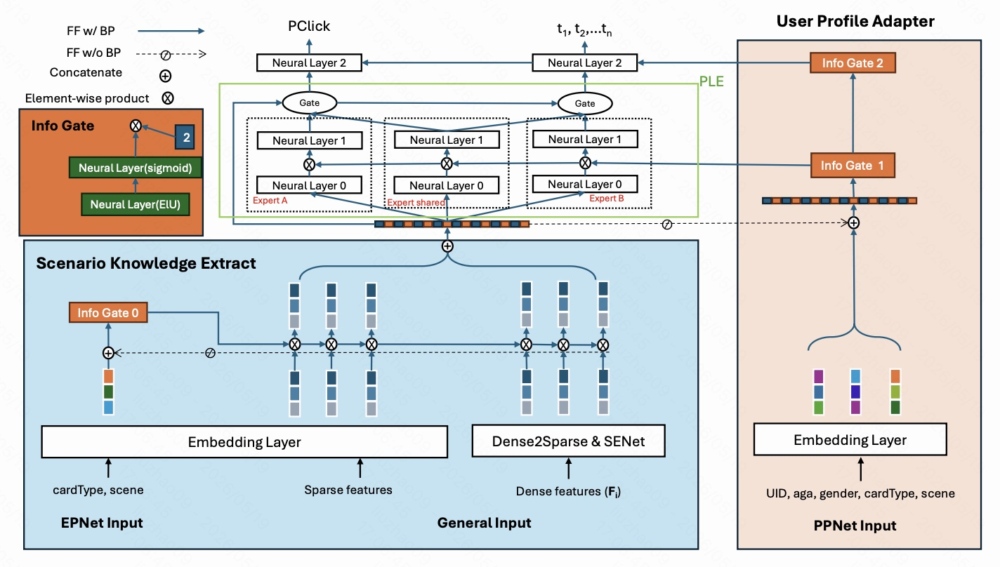
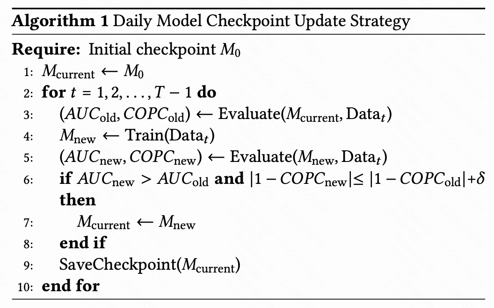
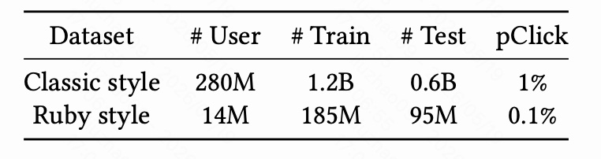
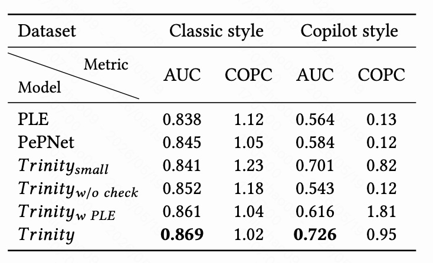

这里精读一篇微软的 WWW 2026 论文：《Trinity: A Scenario-Aware Recommendation Framework for Large-Scale Cold-Start Users》。这篇文章讨论的是一个非常典型、也非常工业化的问题：当一个成熟产品迁移到新形态、新页面、新场景时，推荐系统如何服务大量冷启动用户。
论文地址：https://arxiv.org/abs/2603.00502
这篇论文的核心不是提出一个单点模型 trick，而是把冷启动新场景问题拆成三个必须同时解决的环节：特征工程、模型结构、模型更新策略。作者把这个三位一体的框架命名为 Trinity。它的应用背景是 Microsoft MSN 从经典样式页面迁移到 Copilot 风格页面，线下在 Copilot 新场景上把 AUC 提升到 0.726、COPC 校准到 0.95，线上 A/B 带来 Time Spent +5.61%、iDAU +3.04%。
1. 论文背景：为什么新场景冷启动这么难

图 1 展示了 MSN 的产品形态迁移：左边是 classic style 页面，右边是 Copilot style 页面。两个页面并不是完全不同的产品，它们之间有重叠内容，例如新闻卡片、天气卡片、财经卡片等；但右侧 Copilot 风格页面又引入了新的内容形态，例如 Copilot 生成内容、不同的 widget 展示方式、不同的页面布局。
这类场景在工业推荐里非常常见：一个成熟产品已经积累了大量历史行为，但新产品形态上线后，推荐系统面临的不是普通冷启动，而是 “新用户 + 新场景 + 旧场景知识迁移” 的复合问题。
具体难点有三个：
- 新场景行为稀疏：大部分训练数据来自 classic style，Copilot style 刚上线时用户少、交互少、点击率也低，模型很难直接从新场景里学到稳定规律。
- 同一内容在不同场景里的点击偏置不同：同一个新闻卡片放在 classic 页面和 Copilot 页面，曝光位置、上下文、用户预期都不同，真实 CTR 可能明显变化。模型不能简单地认为 item 相同就代表行为语义相同。
- 模型每日更新不一定总是变好：新场景早期数据波动很大，传统每日增量更新可能被短期噪声带偏，导致线上指标抖动甚至退化。
作者认为，已有方法往往只解决其中一部分问题：
- MMoE / PLE 类多场景模型：通过多专家和 gate 建模多任务、多场景，但当数据极度不均衡时，gate 很容易被老场景主导，新场景拟合不足。
- PePNet 类个性化网络：能引入场景特征与用户特征的交互，但论文认为它对 dense tower 中的场景信号强化不足，新场景预测容易偏向老场景模式。
- 常规日更模型：默认新数据总是有益，但在新场景早期，数据噪声与分布漂移很强，盲目更新会造成模型 jitter 和局部最优。
所以 Trinity 的基本判断是：新场景冷启动不是靠一个更复杂的模型结构就能解决的，必须同时处理“有什么特征可学”“模型如何利用场景信号”“什么时候允许模型更新”这三件事。
2. Trinity 总体框架

图 2 是 Trinity 的整体模型结构。图里可以按从下到上、从左到右理解：
- 左下角和中下角是输入特征，包括 cardType、scene、稀疏特征、统计 dense 特征 $F_i$。
- 蓝色区域是 Scenario Knowledge Extractor，负责把跨场景、跨卡片类型的用户统计行为转成更稳定的表示，并用场景/卡片类型信号进行调制。
- 中间绿色框是类似 PLE 的多专家主干，用于学习点击和停留时长等多任务目标。
- 右侧粉色区域是 User Profile Adapter，类似 PPNet 的个性化调制模块，用用户画像、cardType、scene 再次校准模型的中高层表示。
- 顶部输出包括 pClick，以及 $t_1,t_2,\dots,t_n$ 这样的多分类时长预测目标。论文空间有限，主要讲点击，时长相关部分没有展开。
Trinity 的三部分可以概括为：
- Feature Engineering：构造跨时间、跨场景、跨卡片类型、跨行为类型的用户统计行为张量，而不是只保留与当前 target item 直接相关的行为。
- Model Architecture：用 Scenario Knowledge Extractor 和 User Profile Adapter 强化 scene / cardType 信号，避免老场景数据吞没新场景规律。
- Stability-Aware Model Updating：用 AUC 和 COPC 双指标决定是否接受每日新 checkpoint，避免被不稳定新数据带偏。
这个框架的名字 Trinity 很贴切：它不是单一模型，而是三层工程策略组合。任何一层缺失，都会在实验里明显掉点。
3. 特征工程：从 target-only 到 all-content behavior tensor
3.1 传统做法的问题
传统推荐系统里，候选 item 数量非常大。为了控制特征规模，很多系统只保留与当前 target item 直接相关的用户行为特征。例如：
- 用户过去是否看过同类新闻；
- 用户是否点击过类似卡片；
- 用户在相同内容类型上的近期点击次数；
- 用户与当前候选 item 所属类别的交互强度。
这种设计在成熟场景里通常没问题，因为历史行为足够多，target 相关特征也比较充分。但在 Copilot style 这种新场景里会失效。
论文举了一个典型例子：Copilot 生成内容卡片只出现在 Copilot layout 中，在 classic style 里不存在。因此绝大多数用户在 classic 场景中没有任何 “Copilot-generated content” 的历史交互。若模型只保留 target item 相关行为，那么新场景下很多用户的关键特征会接近空值。
这会导致两个后果：
- 低活跃用户学不到偏好：用户历史短，target 相关行为更少，模型几乎没有可用信号。
- 高活跃老场景用户支配训练：classic 场景里的活跃用户序列长、样本多，模型优化会偏向这些用户模式，对 inactive / new users 的泛化变弱。
因此作者选择不用纯序列行为作为主信号，而是构建固定维度的统计行为张量，让新老用户都落在统一特征空间里。
3.2 统计行为特征张量 $F_i$
对每个用户 $U_i$，Trinity 构造如下统计行为张量：
其中四个维度分别是：
- 时间窗口 $\mathcal{T} = \{1h, 1d, 7d, 30d\}$；
- 场景 $\mathcal{S} = \{classic, copilot, all\}$；
- 卡片类型 $\mathcal{C} = \{weather, finance, news, video, copilot\text{-}content\}$；
- 行为类型 $\mathcal{A} = \{view, click\}$。
直观地说，$F_i$ 不是问 “用户是否和当前 target item 发生过关系”，而是问：
- 用户过去 1 小时 / 1 天 / 7 天 / 30 天在各类内容上看了多少、点了多少；
- 这些行为发生在 classic、copilot，还是所有场景聚合；
- 用户是否在某些内容类型上有稳定偏好，即使这些内容不一定和当前候选 item 完全一致。
比如一个用户从未点击过 Copilot-generated content，但他在 classic 页面中长期点击科技新闻、视频内容、天气 widget，那么这些跨内容统计仍然能帮助模型推断他在 Copilot 风格页面里的潜在兴趣。
这一步的关键价值是：把冷启动用户从“几乎没有 target 相关特征”变成“至少有跨内容、跨场景、跨时间窗口的统计画像”。
3.3 为什么不用纯序列建模
论文对 sequential behavior feature 的批评值得注意。工业推荐里经常会把用户行为序列喂给 DIN、Transformer、SIM、MIMN 等结构，但在这篇论文的场景下，纯序列特征有两个天然问题：
- inactive 用户序列太短：冷启动用户或低活跃用户历史行为很短，序列模型没有足够上下文。
- active 用户序列太强：老场景活跃用户序列很长，训练时贡献大量样本，模型容易过拟合 “老场景高活跃用户” 的行为模式。
所以 Trinity 的思路不是完全放弃行为序列，而是强调：在新场景冷启动中，固定维度的统计行为张量比长序列更稳定、更公平。它能让新用户、老用户、活跃用户、非活跃用户共享同一个行为特征结构，减少样本量差异导致的表征偏置。
4. 模型结构：如何把场景知识真正注入模型
Trinity 的模型结构可以拆成两个关键模块：
- Scenario Knowledge Extractor：偏底层，处理跨场景统计行为特征，让 scene/cardType 先参与特征过滤与增强。
- User Profile Adapter：偏中高层，用用户画像和场景信息对共享表示再次校准，避免最终 pClick 仍然被老场景分布主导。
这两个模块分别解决不同位置的场景偏置问题。
4.1 Dense2Sparse：先把统计 dense 特征离散化
统计行为张量 $F_i$ 本质上包含大量 dense 数值特征，例如某个时间窗口内的点击数、曝光数、点击率、不同 cardType 下的统计量等。直接把这些 dense feature 喂给模型会有两个问题：
- 用户行为分布长尾严重，极端值容易影响训练收敛；
- dense 特征数量很多，在线推理成本和训练成本都会上升。
Trinity 先做 dense-to-sparse transformation，把 dense 行为统计转成 sparse embedding。不同于简单的等宽分桶或等频分桶，论文先对 dense features 做 Batch Normalization，再做 equal-frequency binning。
这一步的直觉是：
- BatchNorm 先把不同统计特征的尺度拉到更稳定的分布；
- 等频分桶让每个 bucket 里有相对均衡的样本；
- 再把 bucket id 当成 sparse id 查 embedding。
这样做的好处是，离散后的特征更稳定，也更适合工业推荐系统里的 embedding + MLP 范式。
4.2 SENet：压缩高维交叉统计特征
由于 $F_i$ 来自时间、场景、卡片类型、行为类型的笛卡尔积，再加上实际系统里还会有更多统计项，最终 dense feature 数量可能达到几千维。直接使用会带来推理延迟和训练成本。
论文使用 SENet（Squeeze-and-Excitation Network）建模特征间依赖，并把特征表示压缩到原始维度的三分之一。
这里的 SENet 可以理解为一个特征通道选择器：
- squeeze 阶段聚合特征整体信息；
- excitation 阶段学习每个特征通道的重要性；
- 最后用学习到的权重突出重要特征、压低弱特征。
在这个场景下，SENet 的作用不只是降维，更重要的是让模型自动判断哪些统计行为对当前用户、当前场景更有用。例如，Copilot 场景里与 copilot-content、news、video 相关的近期行为可能更重要，而某些 classic-only widget 行为可以被压低。
4.3 Scenario Knowledge Extractor：用 scene/cardType 做底层门控
在图 2 的蓝色区域，Scenario Knowledge Extractor 接收三类信息：
- cardType、scene 形成的 EPNet Input；
- 常规 sparse features；
- 经过 Dense2Sparse 和 SENet 处理的 dense features $F_i$。
核心机制是一个 Info Gate。它用 cardType 和 scene embedding 生成门控向量，再对底层特征进行 element-wise product 调制。论文特别提到，gate 经过 sigmoid 后取值在 $[0,1]$，通常会以 0.5 为中心。如果直接乘到特征上，会整体削弱特征强度。因此作者把 gate 输出乘以 2，让它的中心从 0.5 平移到 1 左右：
然后对输入特征做：
这个小设计很实用。它不是让 gate 只做 “关小特征”，而是让 gate 既可以增强，也可以削弱：
- 当 $g > 1$ 时，放大当前 scene/cardType 下更重要的特征；
- 当 $g < 1$ 时，压低当前场景中不可靠或不相关的特征；
- 当 $g \approx 1$ 时，保持原特征基本不变。
这就把场景知识注入到了模型底层，让后续 PLE / neural layer 接收到的不是一份通用表示，而是已经被场景过滤过的表示。
4.4 PLE 主干：多任务与共享专家
图 2 中间绿色框是 PLE 风格的主干结构，包含 Expert A、Expert shared、Expert B，以及上层 gate。顶部有两个输出方向：
- pClick：点击概率；
- $t_1,t_2,\dots,t_n$：多分类停留时长或 duration 相关目标。
PLE 的基本思想是用 shared expert 学多任务共享信息，用 task-specific expert 学特定任务差异，再通过 gate 对专家输出加权。这类结构在多任务推荐里很常见。
但 Trinity 并不只是直接使用 PLE。论文实验里的 Trinity w PLE 表明，如果把 Trinity 的主干替换成普通 PLE，新场景效果会明显退化：Copilot style AUC 只有 0.616，COPC 变成 1.81，说明预测 CTR 被严重低估。
这说明一个关键点：多专家结构本身不足以解决新场景冷启动。 当 classic 数据远多于 Copilot 数据时，共享专家和 gate 仍然可能主要学习 classic 模式；如果没有额外的场景知识抽取与用户画像适配，新场景会被主场景牵着走。
4.5 User Profile Adapter：在中高层再次校准场景偏置
即使底层已经用了 Scenario Knowledge Extractor，classic-style 数据仍然可能在 PLE、neural interaction layers、最终 pClick 预测层中继续占主导。为了解决这个问题，论文引入 User Profile Adapter。
这个模块位于图 2 右侧粉色区域，输入包括：
- UID；
- age；
- gender；
- cardType；
- scene。
这些特征经过 embedding 后，通过 Info Gate 1、Info Gate 2 对中高层表示进行再次调制。它的思想接近 PPNet：用用户画像和场景上下文生成个性化参数或门控，让同一个共享网络在不同用户、不同场景下表现出不同的响应。
可以把 User Profile Adapter 理解成最后一道校准器。它解决的是这样的问题：
同一个用户、同一个候选内容，在 classic style 和 Copilot style 中可能应该有不同的 pClick 分布；模型需要知道这不是噪声，而是场景上下文本身改变了点击倾向。
这个模块的价值主要体现在校准上。对于工业推荐系统来说，AUC 只表示排序能力，不能保证预估 CTR 与真实 CTR 一致。如果 pClick 系统性偏高或偏低，下游 re-ranking、流量分配、广告竞价或内容策略都会受到影响。
所以 Trinity 同时关注：
- 排序：AUC 要高；
- 校准：COPC 要接近 1；
- 场景一致性：新老场景都不能严重偏移。
5. 稳定更新：为什么日更模型也需要准入机制

这篇论文非常工业化的一点是，它没有把模型训练策略当成系统外部问题，而是把 checkpoint 更新策略 纳入 Trinity 框架。
新场景上线早期，用户行为变化很快。例如 Copilot style 页面刚推出时，用户可能只是尝鲜，点击分布会快速变化；某一天的行为数据并不一定代表长期偏好。如果每天都用最新数据训练并直接上线，模型可能发生：
- 短期噪声被过度学习；
- 新场景 COPC 快速恶化；
- 线上指标上下抖动；
- 模型陷入对某一天局部分布的过拟合。
因此 Trinity 使用 AUC + COPC 的双指标准入机制。
每天训练出候选模型 $M_{new}$ 后，不是直接替换当前模型 $M_{current}$，而是在当天数据 $Data_t$ 上分别评估旧模型和新模型：
只有当下面两个条件同时满足时，才接受新 checkpoint：
也就是说：
- 新模型排序能力必须更好；
- 新模型的校准误差不能比旧模型明显更差，允许一个很小容忍阈值 $\delta$。
如果候选模型只是 AUC 变高，但 COPC 明显偏离 1，就不会被接受。反过来，如果 COPC 好一点但 AUC 不提升，也不会被接受。
这个策略的意义在于：把模型更新从“按时间自动推进”改成“按线上稳定性准入”。
在新场景冷启动中，这一点非常关键。因为早期样本少、点击率低、用户构成变化快，训练 loss 下降并不等于线上系统真的更稳定。
6. 实验设置

论文数据来自 Microsoft MSN 生态中超过 10 亿月活用户。训练和测试设置如下：
- 训练数据：7 月 14 日到 7 月 28 日；
- 测试数据：8 月 1 日到 8 月 7 日；
- 每天评估时允许使用该天之前的所有数据训练，例如评估 8 月 5 日时可使用到 8 月 4 日的数据；
- 最终结果报告 7 个测试日的平均值。
数据规模差异非常大：
- Classic style：2.8 亿用户，12 亿训练样本，6 亿测试样本，pClick 约 1%；
- Ruby style / Copilot style：1400 万用户，1.85 亿训练样本，9500 万测试样本，pClick 约 0.1%。
表 1 中使用的是 Ruby style 名称，而正文主要称为 Copilot style，可以理解为论文中的新页面/新场景命名存在内部口径差异。关键点不受影响：新场景用户规模更小、样本更少、点击率低一个数量级。
6.1 Baselines 与消融版本
论文比较了两个 baseline：
- PLE：经典多任务多专家结构；
- PePNet：引入 personalized prior information 的参数与 embedding 个性化网络。
同时做了三个 Trinity 变体：
- Trinity_small：只保留与当前 target item 相关的行为特征，不保留完整 all-content behavior features；
- Trinity w/o check：去掉 AUC 与 COPC 准入检查，采用常规连续日更；
- Trinity w PLE：用 PLE 替换 Trinity 的模型主干，用于验证定制结构的重要性。
训练细节：
- 激活函数：ELU；
- batch size：1024；
- optimizer：Adam；
- $\beta_1 = 0.9$，$\beta_2 = 0.999$；
- $\epsilon = 1 \times 10^{-6}$；
- learning rate：0.0001。
6.2 评价指标：AUC 与 COPC
论文使用两个指标：
AUC
AUC 衡量排序能力。值越高，说明模型越能把点击样本排在未点击样本前面。
COPC
COPC 定义为：
其中 $realCTR$ 是真实点击率，$pCTR$ 是模型预测点击率。COPC 越接近 1，说明校准越好。
需要注意 COPC 的方向：
- $COPC = 1$：预测 CTR 与真实 CTR 对齐；
- $COPC < 1$：$pCTR > realCTR$，模型高估点击率；
- $COPC > 1$：$pCTR < realCTR$，模型低估点击率。
在新场景推荐里，COPC 很重要。因为排序模型如果 pCTR 严重偏高或偏低，下游系统拿到的分数就不是可靠的概率，可能影响重排、流量分配、业务策略和实验判断。
7. 离线实验结果

表 2 是整篇论文最关键的实验结果。
7.1 Classic style：成熟场景中提升较温和
Classic style 数据充足，因此所有方法 AUC 都在 0.8 以上，COPC 也相对接近 1：
- PLE：AUC 0.838，COPC 1.12；
- PePNet：AUC 0.845，COPC 1.05；
- Trinity：AUC 0.869，COPC 1.02。
Trinity 在成熟场景仍然最好，但提升不是特别夸张。这符合预期：当场景已经有大量稳定数据时，传统多任务/多场景模型已经能学到不错表示，Trinity 的优势主要体现在更复杂的新场景迁移问题上。
7.2 Copilot style：新场景上 Trinity 拉开明显差距
Copilot style 才是本文的核心场景。可以看到 baseline 表现很差：
- PLE：AUC 0.564，COPC 0.13；
- PePNet：AUC 0.584，COPC 0.12。
AUC 接近随机，COPC 远小于 1，说明模型不仅排序弱，而且严重高估 CTR。因为新场景真实点击率很低，模型如果被 classic style 的高点击率模式影响，就会把 pCTR 估得过高。
Trinity 的结果是：
- AUC 0.726；
- COPC 0.95。
这说明 Trinity 同时解决了两件事：
- 排序能力显著增强：新场景 AUC 从 0.584 提升到 0.726，相比 PePNet 绝对提升 0.142。
- 校准明显改善：COPC 从 0.12 提升到 0.95，预测 CTR 基本回到真实 CTR 附近。
这里最重要的不是 AUC 单点提升，而是 AUC 和 COPC 同时变好。很多工业模型可能只提升排序，但校准变差；Trinity 的价值在于它让新场景的 pClick 更可信。
7.3 Trinity_small：完整行为特征非常关键
Trinity_small 只保留与当前 target item 相关的行为特征，相当于退回传统 target-specific feature 设计。
它在 Copilot style 上的结果是：
- AUC 0.701；
- COPC 0.82。
相比完整 Trinity：
- AUC 少 0.025；
- COPC 从 0.95 退到 0.82。
这个消融直接验证了第 3 节的观点：新场景冷启动不能只看当前 target item 相关行为。完整的 all-content behavior tensor 能捕捉跨内容偏好，让模型从用户在其他 cardType、其他 scenario 中的行为推断新场景兴趣。
这也说明 Trinity 的提升不是单纯来自更复杂的网络，而是特征工程本身贡献很大。
7.4 Trinity w PLE：普通多专家结构不足以承接新场景
Trinity w PLE 在 classic style 上表现很好：
- AUC 0.861；
- COPC 1.04。
但在 Copilot style 上：
- AUC 0.616；
- COPC 1.81。
这代表两个问题：
- AUC 比完整 Trinity 低 0.110，新场景排序明显不足；
- COPC 远大于 1，说明模型低估了真实点击率。
论文解释是：PLE 过度强调从 Classic 场景学到的共享表示，对稀疏冷启动分布适配不足。我的理解是，PLE 的专家/门控虽然理论上能做多场景学习，但在样本极不均衡时，gate 本身也会被大场景训练得更充分，小场景就很难拿到可靠的专家组合。
Trinity 的 Scenario Knowledge Extractor 和 User Profile Adapter 本质上是在 PLE 前后都加了显式场景调制：
- 前面让输入特征先被 scene/cardType 过滤；
- 后面让中高层表示再被 user profile + scene/cardType 校准。
这比只靠 PLE gate 更强。
7.5 Trinity w/o check：更新策略缺失会直接拖垮新场景
Trinity w/o check 是最能体现工业经验的消融。
它在 classic style 上结果并不差：
- AUC 0.852；
- COPC 1.18。
但在 Copilot style 上几乎退回 baseline：
- AUC 0.543；
- COPC 0.12。
这说明：如果去掉 AUC/COPC checkpoint 准入检查，模型连续日更会被新场景不稳定数据带偏，最终对 Copilot style 的排序和校准都崩掉。
这个结果很有启发。很多论文把训练数据按时间滑窗更新视为默认流程，但在产品迁移早期，日更策略本身就是模型效果的一部分。Trinity 把 update policy 纳入框架，是这篇文章最有工业价值的地方之一。
8. 线上 A/B 实验
论文在 2025-08-19 到 2025-08-23 期间，对 Microsoft MSN 产品做了大规模线上 A/B。
结果：
- Time Spent +5.61%；
- iDAU +3.04%；
- 这是过去六个月 Copilot-style 产品迭代中观察到的最大提升。
其中 iDAU 指 interaction DAU，即用户在 MSN 生态中至少发生一次有意义交互才计入。
系统成本方面：
- Trinity 额外增加约 10 ms 推理延迟；
- 全链路端到端延迟约 300 ms，因此 10 ms 增量可以接受；
- 因为引入更多 card-type interaction features，特征存储增加约 20%。
这个 trade-off 在工业系统里是合理的。对于一个新场景迁移任务，Time Spent +5.61% 和 iDAU +3.04% 的收益，通常足以覆盖 10 ms 延迟和 20% 特征存储成本。
9. 这篇论文的核心逻辑链路
Trinity 的逻辑可以按下面这条链路理解：
- 产品从 classic style 迁移到 Copilot style，新场景样本少、点击率低、用户行为不稳定。
- 如果只用 target item 相关特征，冷启动用户几乎没有有效信号；所以要构造跨时间、跨场景、跨卡片类型、跨行为类型的统计行为张量 $F_i$。
- 这些统计特征维度高、分布长尾，所以要做 BatchNorm + 等频分桶的 Dense2Sparse，再用 SENet 压缩和筛选。
- 由于 classic 数据远多于 Copilot 数据，模型必须显式感知 scene/cardType；所以底层用 Scenario Knowledge Extractor 做 gate 调制。
- 即使底层做了调制，中高层共享表示仍可能被 old scenario 主导；所以用 User Profile Adapter 根据 UID、年龄、性别、cardType、scene 再次校准。
- 新场景每日数据波动大，不能盲目日更；所以用 AUC + COPC 决定是否接受新 checkpoint。
- 线下实验表明，完整 Trinity 在新场景上同时提升 AUC 和 COPC；线上 A/B 也验证了用户时长与互动 DAU 的提升。
因此，这篇论文真正想表达的是：大规模产品迁移中的推荐冷启动，需要把数据、模型和更新机制看成同一个系统，而不是只优化模型结构。
10. 与常见推荐方法的区别
10.1 与传统冷启动方法的区别
传统冷启动常见做法是引入内容特征、用户画像、物品画像，或者用迁移学习从老场景迁到新场景。Trinity 的不同点在于，它没有只关注 item 或 user 的静态画像，而是构造了一个多维行为统计空间：
这个空间既保留了用户行为，又避免了长序列对活跃用户的偏置。
10.2 与多场景模型的区别
MMoE / PLE / Shared-Bottom 等多场景模型通常假设各场景都有足够数据，让 gate 或 expert 自动学习差异。但 Trinity 面对的是极端不均衡场景：
- old scenario 样本充足；
- new scenario 样本少且点击率低；
- new scenario 还处于产品形态快速变化期。
这种情况下，自动 gate 不一定可靠。Trinity 选择在输入层和中高层都显式加入 scene/cardType 调制，相当于把场景知识从 “让模型自己悟” 变成 “结构上强制参与”。
10.3 与只看 AUC 的模型更新不同
很多排序模型上线时主要看 AUC、GAUC、NDCG、Recall 等排序指标。但 Trinity 强调 COPC，因为它们的 pClick 会进入真实线上系统。
如果模型 AUC 高但 pCTR 高估，线上系统可能过度分发某些内容；如果 pCTR 低估，则可能压制本该推荐的内容。对新场景来说，这种校准偏差尤其危险，因为真实 CTR 基准本来就很低。
因此 Trinity 的 checkpoint 更新条件同时约束：
- 排序必须变好；
- 校准不能明显变差。
这是一个非常实用的线上准入原则。
11. 可以借鉴的工程经验
这篇文章虽然只有 5 页，但能提炼出不少工程经验。
11.1 新场景不要只复用老场景模型
老场景模型在样本量上有绝对优势。如果直接把老模型迁过去，新场景容易出现两类问题：
- 学不到新页面独有内容形态；
- 把 old scenario 的 CTR 分布错误迁移到 new scenario。
Trinity 的做法是复用老场景知识，但必须通过 scene/cardType gate 重新过滤。
11.2 冷启动用户需要固定统计空间
对冷启动或低活跃用户来说，长序列建模未必是最佳选择。固定维度的统计行为张量更稳定，也更容易让不同活跃度用户共享特征空间。
尤其在产品迁移中，用户可能没有新场景行为，但有老场景行为。把 classic、copilot、all 三种 scenario 统计放在同一张量里，可以自然支持跨场景迁移。
11.3 校准指标要进入模型更新策略
COPC 不是一个离线报告里可有可无的指标，而是决定 checkpoint 是否上线的条件之一。
这点很值得借鉴。实际推荐系统中，排序分数常常被下游模块当成概率使用。如果校准不稳，即使 AUC 有提升，也可能造成线上体验波动。
11.4 模型日更不是越新越好
在稳定场景里，每日更新通常默认有益。但新场景早期不是这样。用户行为变化快、样本量小、点击率低，最新一天的数据可能只是噪声。
Trinity 的 update check 本质上是给模型训练加了一个 “质量闸门”。只有当新模型同时满足排序和校准要求时，才允许替换线上模型。
12. 局限与未展开部分
这篇论文更像工业短文，信息密度高，但也有一些没有充分展开的地方：
- 缺少更细粒度的模块消融：例如 Dense2Sparse、SENet、Scenario Knowledge Extractor、User Profile Adapter 各自贡献多少，论文没有单独拆开。
- 没有公开数据集与代码：数据来自 MSN 真实业务，结果可信但难复现。
- 模型结构细节不够完整：图中 PLE、Info Gate、PPNet-like adapter 的具体层数、维度、参数规模没有详细说明。
- duration 多任务没有展开：图里有 $t_1,t_2,\dots,t_n$，但正文主要讲 pClick，时长目标的建模和损失没有细讲。
- 表述上有一些论文草稿痕迹：例如图文中出现 “need citation”，表 1 的 Ruby style 与正文 Copilot style 命名不完全一致。
这些问题不影响主要结论，但说明这篇文章的价值更偏工业经验总结，而不是可复现的学术基准。
13. 总结
Trinity 的核心贡献可以浓缩成一句话：
在大规模产品迁移的新场景冷启动中，推荐系统不能只依赖模型结构升级，而要同时设计跨场景统计特征、场景感知模型结构和稳定的 checkpoint 更新策略。
更具体地说：
- 特征层面，用 $F_i \in \mathbb{R}^{|\mathcal{T}| \times |\mathcal{S}| \times |\mathcal{C}| \times |\mathcal{A}|}$ 捕捉 all-content、cross-scenario、multi-window 的用户行为，缓解 target-only 特征稀疏问题。
- 模型层面，用 Scenario Knowledge Extractor 在底层注入 scene/cardType，用 User Profile Adapter 在中高层再次校准用户画像与场景偏置。
- 更新层面，用 AUC + COPC 准入条件筛选每日 checkpoint，避免新场景波动数据导致模型漂移。
从实验看，Trinity 在成熟 classic style 上只是稳步提升，但在稀疏 Copilot style 上显著改善排序与校准：AUC 达到 0.726，COPC 达到 0.95，远好于 PLE 和 PePNet。线上 A/B 的 Time Spent +5.61%、iDAU +3.04% 也说明这不是单纯离线优化。
这篇论文最值得学习的地方在于它的系统观：冷启动推荐不是一个单点算法问题，而是数据构造、模型归纳偏置、训练更新机制共同作用的结果。 对任何正在做新场景、新入口、新产品形态迁移的推荐系统来说，这个框架都有很强参考价值。